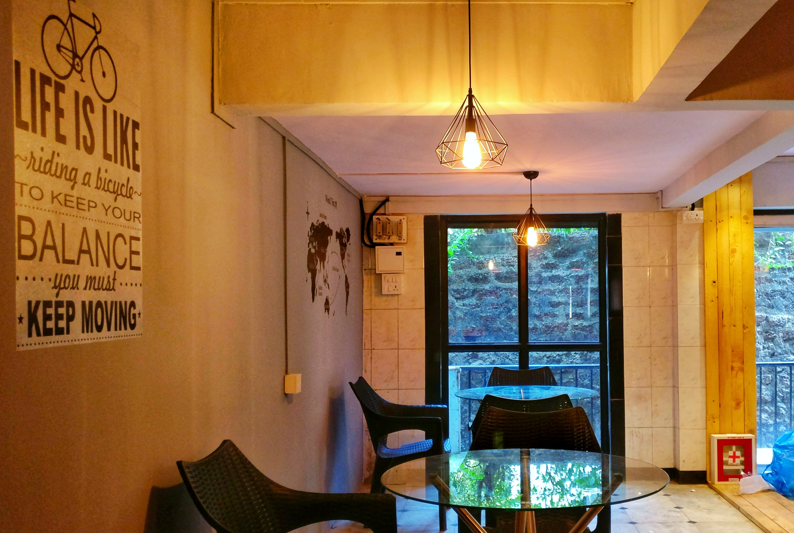
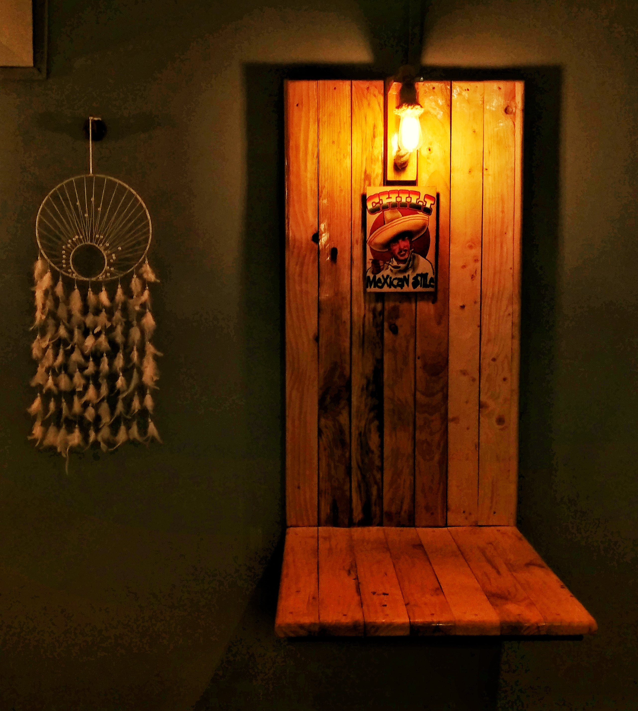
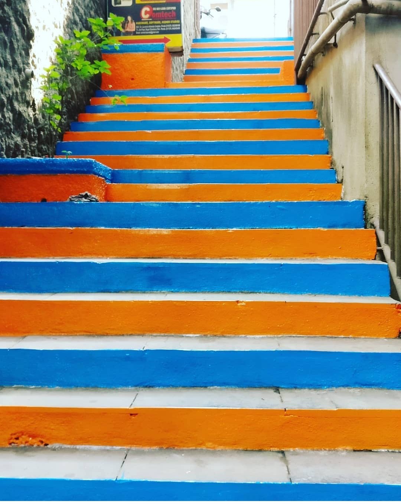
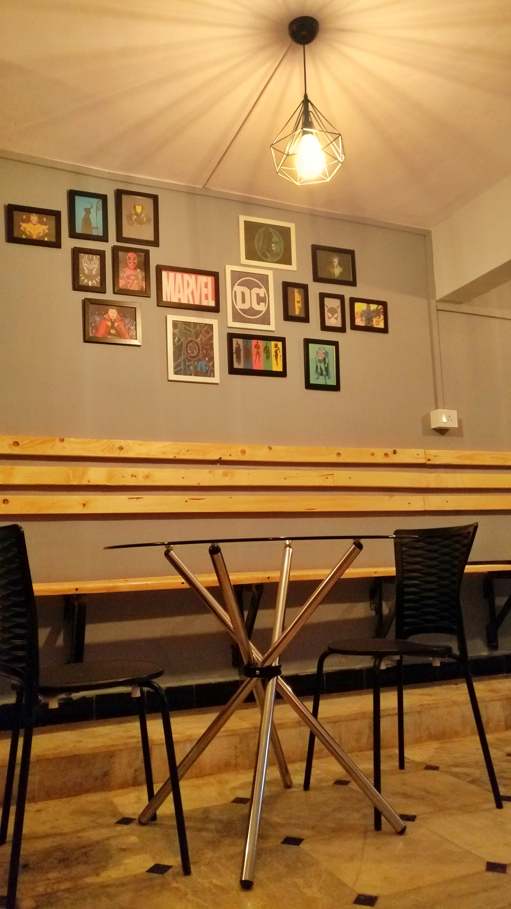

WONDERWALL CAFE
THE CAFE

WONDERWALL cafe nestled in the heart of Ponda,
an elegant and peaceful place surrounded by good vibes onlySince opening ,
we've been steadily growing as a cafe, introducing new menu items and seasonal drinks
.

Our philosophy is for every drink and food offered on the menu
to be one that is locally sourced & tested for quality and taste.

Stairways towards WONDERWALL. We hope you come
by our shop to breathe in the same crisp mountain air that we enjoy,
and see our space for yourself..

Interiors of wOnderwall are designed with the theme of 70's lifestyle.
Most of the furniture are made out of wood which gives a very rustic look.